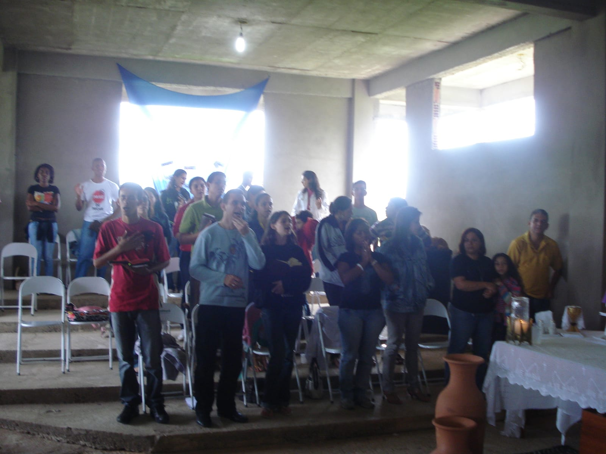

Amor que vira ação
A Associação Trindade Santa é a própria comunidade, organizada para servir.
Associação Trindade Santa
A Associação é a própria comunidade, organizada para servir. Cada doação sustenta os serviços sociais e a evangelização dos jovens.

Faça sua doação
Abra o app do seu banco, escolha PIX e use o QR Code ou copie a chave abaixo. Qualquer valor é bem-vindo.
Deus ama quem dá com alegria.
“Cada um dê conforme decidiu em seu coração, não com tristeza nem por obrigação.” 2 Coríntios 9, 7